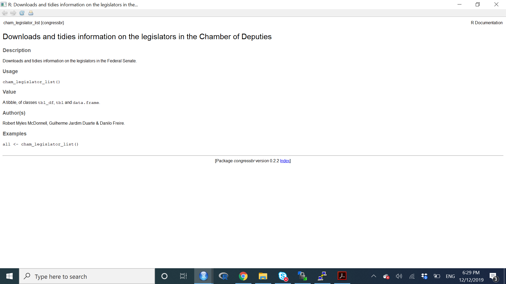

Fogo Cruzado API
Vamos agorar usar como exemplo a API do projeto Fogo Cruzado.
Neste caso, a API exige credenciais, e este sempre deve ser nosso primeiro passo. Aqui vocês encontram a descrição sobre como ganhar sua senha de acesso. Vamos ver como fazer no código abaixo.
Acessando sua senha
Error in curl::curl_fetch_memory(url, handle = handle): Could not resolve host: api.fogocruzado.org.brError in is.response(x): object 'get_jwt' not found# Pacotes para acessar APIs
library(httr)
library(jsonlite)
library(tidyverse)
# Solicitar a senha
get_jwt <- httr::POST("https://api.fogocruzado.org.br/api/v1/auth/login",
query = list(email = "venturat@umd.edu", password = "xxxxxx"))
# Pegar a senha
token <- httr::content(get_jwt)$access_token
# token = sua senha de acesso à API. Nao compartilhe por ai.Agora que temos nossa credencial, vamos olhar a documentação da API. Neste link vocês encontrarão a documentação.
Base da API (End Point)

Filtros da API
A principal informação do site do fogo cruzado são as ocorrências de tiroteio no Rio de Janeiro e Recife. Na documentação, indica-se que há três endpoints principais para a APIÇ: cidades, estados e ocorrências.
Vamos começar pelo endpoint cidades, um fácil que não exige filtros. Abre este link da documentação
# Passo 1. Crie a Url
base_url <- "https://api.fogocruzado.org.br/api/v1"
cities <- "/cities"
api <- paste0(base_url, cities)
print(api)[1] "https://api.fogocruzado.org.br/api/v1/cities"GET Request
Para solicitar os dados de uma API
# Passo 2: Acesse a API
response <- GET(api,
add_headers('Authorization' = paste("Bearer", token, sep = " ")))Error in paste("Bearer", token, sep = " "): object 'token' not found# Qual o resultado?
responseError in eval(expr, envir, enclos): object 'response' not foundLimpando Resultado
O retorno da API é um arquivo em JSON - que é um tipo mais eficiente para salvar arquivos grandes - e possui status 200 - que significa seu acesso funcionou. Vamos agora limpar esse arquivo JSON.
Vamos limpar arquivos de json pode ser complicado, por isso, vamos tocar somente a superficie aqui.
# Converter para um json
json_fogo_cruzado <- content(response, as="text", encoding = "UTF-8")Error in is.response(x): object 'response' not foundIsto é o que um arquivo de JSON parece. O código acima somente converte a conexão com a API para um longo texto. Esse texto possui separadores - muitas vezes hierarquicos - e chamamos esse arquivo de JSON. O pacote de R rjson permite-nos transformar este arquivo em um banco de dados

# Limpando Jsons
output <- fromJSON(json_fogo_cruzado) %>%
tibble::as_tibble()Error in fromJSON(json_fogo_cruzado): object 'json_fogo_cruzado' not foundoutputError in eval(expr, envir, enclos): object 'output' not foundAPI com Filtros.
Todas as APIs de verdade possuem parâmetros para filtrar os acessos. Por exemplo, quando usamos a API do twitter e pedimos para buscar tweets mencionando determinada palavra, precisamos adicionar um filtro ao chamado principal da API.
No caso do Fogo Cruzado, precisamos de filtros para o período de busca. Para acessarmos as ocorrências de tiroteio, é preciso pedir dados de no máximo 7 meses de intervalo.
Para isso, devemos adicionar uma query de filtros na função GET. Estes filtros devem ser solicitados de acordo com a documentação da API. Veja aqui alguns exemplos
# url basica de ocorrencias.
base_url <- "https://api.fogocruzado.org.br/api/v1"
occurences <- "/occurrences"
api <- paste0(base_url, occurences)
print(api)[1] "https://api.fogocruzado.org.br/api/v1/occurrences"# Cria Query
query_list <- list(data_ocorrencia="2019-01-01",
nome_cidade= "Rio de Janeiro")
# GET
response <- GET(api,
query=query_list,
add_headers('Authorization' = paste("Bearer", token, sep = " ")))Error in paste("Bearer", token, sep = " "): object 'token' not foundoutput <- jsonlite::fromJSON(httr::content(response, as="text", encoding = "UTF-8")) %>%
tibble::as_tibble()Error in is.response(x): object 'response' not foundView(output)Error in as.data.frame(x): object 'output' not foundEscrever o endpoint inteiro
Uma opção é escrever o endpoint junto com os filtros diretamente. Qualquer caminho funciona bem, apesar do uso de query ser mais geral.
# url basica de ocorrencias.
base_url <- "https://api.fogocruzado.org.br/api/v1"
occurences <- "/occurrences"
filter= "?data_ocorrencia[gt]=2019-01-01&data_ocorrencia[lt]=2019-05-01&CidadeID[]=3661"
api <- paste0(base_url, occurences, filter)
print(api)[1] "https://api.fogocruzado.org.br/api/v1/occurrences?data_ocorrencia[gt]=2019-01-01&data_ocorrencia[lt]=2019-05-01&CidadeID[]=3661"# GET
response <- GET(api,
add_headers('Authorization' = paste("Bearer", token, sep = " ")))Error in paste("Bearer", token, sep = " "): object 'token' not foundoutput <- jsonlite::fromJSON(httr::content(response, as="text", encoding = "UTF-8")) %>%
tibble::as_tibble()Error in is.response(x): object 'response' not foundoutputError in eval(expr, envir, enclos): object 'output' not foundVisualização com Mapas
Podemos visualizar essa informação com mapas. A função get_googlemap na verdade acessa a API do google maps e faz download do mapa do Rio de Janeiro. Para isso, você precisa liberar o seu acesso à API via google aqui. Isso fica como um exercício para quarta-feira.
library(ggmap)
library(RColorBrewer)
ggmap(get_googlemap("rio de janeiro", zoom = 11, maptype = "roadmap", scale=2)) +
geom_point(data = output,
aes(x = longitude_ocorrencia,
y = latitude_ocorrencia),
color="tomato2", alpha=.8, size = 2)Error in fortify(data): object 'output' not foundBut! Nós chechamos se havia algum pacote de R disponível para o Fogo Cruzado?
Uma das maiores vantagens do uso de R reside no fato de se tratar de uma linguagem gratuita e de código aberto. Como resultado, há milhares de programadores trabalhando em desenvolver pacotes e tornando-os acessíveis ao público. Há dois lugares onde esses pacotes são hospedados. O repositório oficial do R chamado CRAN, ou no github - um local onde programadores tornam seus códigos disponíveis.
Se alguem tiver desenvolvido um pacote para acessar a API, você vai ganhar muito tempo usando o pacote diretamente, ao invés de entender toda a documentação da API, como fizemos. Vamos buscar o pacote de R para acessar o Fogo Cruzado.
Este link contém o site do pacote de R, e as recomendações de como utilizá-lo. Como disse, o pactoe está no github. Segue a instalação:
#Instalação do pacote
install.packages("devtools") # pacote para acessar o github
devtools::install_github("voltdatalab/crossfire")Error in curl::curl_fetch_memory(url, handle = handle): Could not resolve host: api.fogocruzado.org.brError in fogocruzado_key(): There's no key available. Please check your sign-in information.
If you haven't included an authorized e-mail and password in this R session yet, please do so using the fogocruzado_signin() functionError in fortify(data): object 'fogocruzado_rj' not foundlibrary(crossfire)
# Registra usuario e senha, e envia sua senha da API
fogocruzado_signin(email = "venturat@umd.edu", password = "xxxxxx")
# Extrair os dados que pegamos manualmente antes
fogocruzado_rj <- get_fogocruzado(state= "RJ", security_agent = 1)
# Colocar em gráfico mais uma vez.
ggmap(get_googlemap("rio de janeiro", zoom = 11, maptype = "roadmap", scale=2)) +
geom_point(data = fogocruzado_rj,
aes(x = longitude_ocorrencia,
y = latitude_ocorrencia),
alpha=.8, size = 0.5, color="darkred")Muito mais fácil!
Congressbr
Para terminar o dia de hoje, vamos praticar um pouco mais com o excelente pacote congressbr. Este artigo sobre o pacote oferece uma excelente introdução à como utilizá-lo, e um sumário de outros pacotes para facilitar acesso à APIs com dados brasileiros.
# Instale o pacote
install.packages("congressbr")
devtools::install_github("RobertMyles/congressbr")O pacote permite o acesso às APIs da Câmara e do Senado. Há quatro funções principais no pacote
- cham_votes(): retorna informação sobre votações na Câmara.
- cham_bills(): retorna informação sobre atividade legislativa na Câmara.
- sen_votes(): retona informação de voto no Senado.
- sen_bill_search(): Procura por atividade legislativa no Senado.
Caso você queira entender mais sobre cada uma das funções, há alguns caminhos. Em primeiro lugar, procure a documentação da API. Em segundo, leia a documentação do pacote ou a sua página no github. Outra opção, é pedir ajuda para entender a função de seu interesse.
Vamos ver algumas das funções do pacote abaixo. Em primeiro lugar, darei um exemplo de como pedir ajudar, e entender a função.
library(congressbr)
# Ajuda em R
?cham_legislator_list
Essa imagem irá aparecer diretamente no seu R Studio. Ela explica o que a função faz, o que retorna, e exemplo de como utilizá-la. Somente de copiar e colar o exemplo, você já terá uma boa dimensão da função.
all <- cham_legislator_list()
glimpse(all)Rows: 512
Columns: 13
$ legislator_id <chr> "73701", "73696", "73801", "74848", "74459…
$ legislator_status <chr> "Titular", "Titular", "Titular", "Titular"…
$ legislator_name <chr> "BENEDITA SOUZA DA SILVA SAMPAIO", "ANGELA…
$ legislator_cham_name <chr> "Benedita da Silva", "Angela Amin", "Renil…
$ legislator_photo_url <chr> "http://www.camara.gov.br/internet/deputad…
$ legislator_gender <chr> "feminino", "feminino", "masculino", "femi…
$ legislator_state <chr> "RJ", "SC", "PE", "RJ", "PI", "PR", "PE", …
$ legislator_party <chr> "PT", "PP", "PCdoB", "PCdoB", "PP", "CIDAD…
$ legislator_cabinet <chr> "330", "252", "915", "622", "640", "916", …
$ legislator_building_address <chr> "4", "4", "4", "4", "4", "4", "4", "4", "4…
$ legislator_telephone_number <chr> "3215-5330", "3215-5252", "3215-5915", "32…
$ legislator_email <chr> "dep.beneditadasilva@camara.leg.br", "dep.…
$ legislator_comissions <chr> "", "", "", "", "", "", "", "", "", "", ""…Abaixo, vou dar um exemplo de uso do pacote.
Número de Proposições por ano
ano<-c(2002:2018)
proposicoes <- map(ano, ~
cham_plenary_bills(.x) %>%
mutate(ano=.x))
# Vamos combinar tudo
proposicoes <- bind_rows(proposicoes)
# Eliminar repeticoes
proposicoes <- proposicoes %>% distinct()
# Agregar por ano
proposicoes_ano <- proposicoes %>% count(ano)
# Marcar anos pre eleitorais
proposicoes_ano <- proposicoes_ano %>%
mutate(ano_eleitoral=ifelse(ano==2002|ano==2006|
ano==2010|ano==2014|ano==2018, "Ano Eleitoral",
"Ano Não Eleitoral"))
ggplot(proposicoes_ano, aes(y=n, x=ano, fill=ano_eleitoral)) +
geom_col() +
scale_fill_manual(name="", values = c("darkred", "darkblue")) +
theme_minimal() +
xlab("ano") + ylab("Proposições Votadas") 
Mais uma vez. O pacote permite fácil e rápido acesso a uma quantidade enorme de dados. Basta nós cientistas sociais aprendermos como utilizar-los.